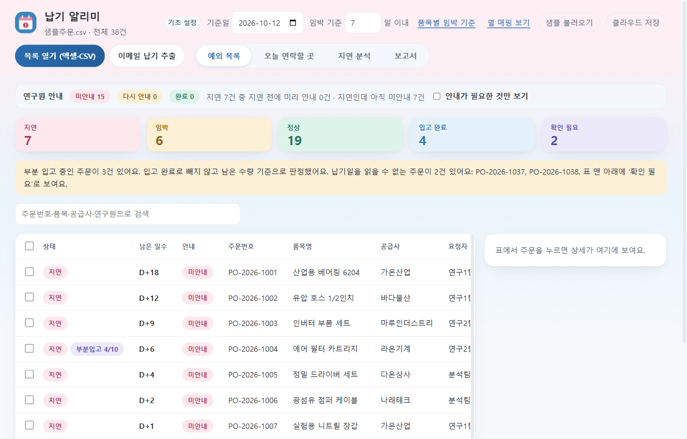
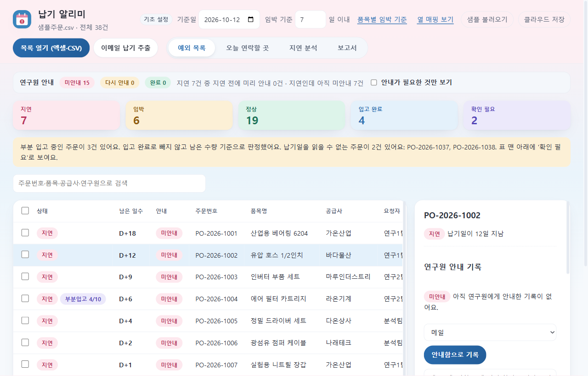
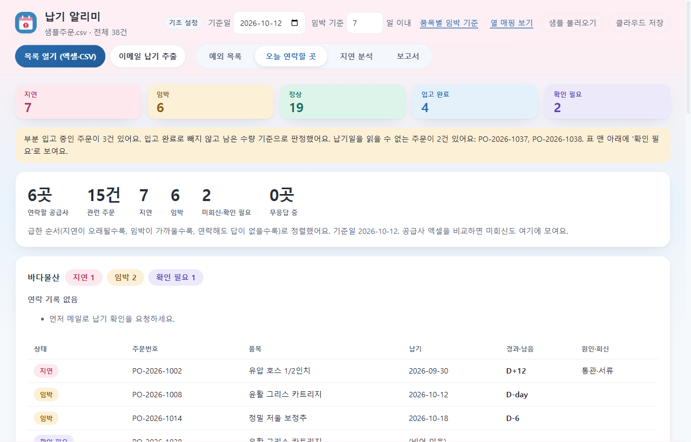
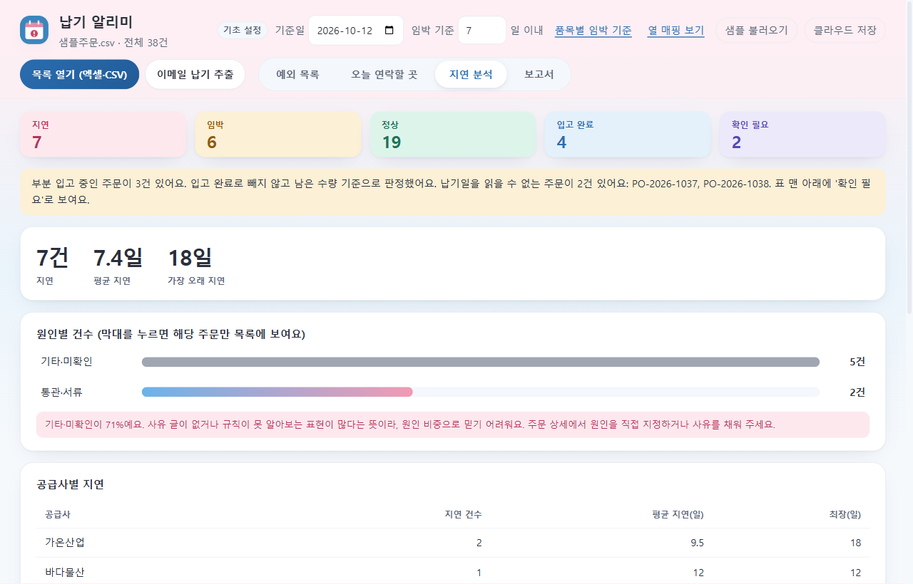
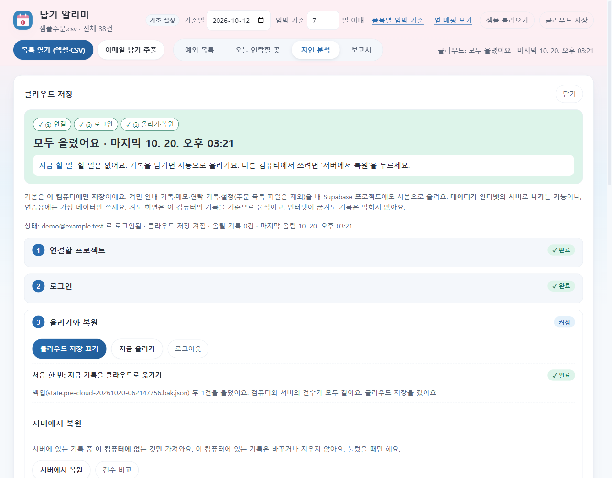

어떤 문제를 풀려고 했나요
납기 관리는 "알고 있는 것"과 "알려야 하는 것"이 엑셀, 메일, 메신저에 흩어져 있어서 자주 놓칩니다.
누구에게 알렸는지 기억이 안 남
지연된 주문을 연구원에게 알렸는지, 언제 어떤 방법으로 알렸는지 기록이 없어 같은 말을 두 번 하거나 아예 빠뜨립니다.
오늘 연락할 곳이 한눈에 안 보임
공급사별로 연락한 날과 답이 없는 횟수를 기억에 의존합니다. 답 없는 공급사는 방법을 바꿔야 하는데 시점을 놓칩니다.
전체 주문이 아니라 "예외"만 보고 싶음
주문 수백 건 중 임박·지연·납기 불명인 것만 골라 보여 주면 확인 시간이 크게 줄어듭니다.
이렇게 일합니다
화면 위쪽 메뉴도 이 순서대로 놓았습니다. 자주 하는 일은 왼쪽, 가끔 바꾸는 설정은 오른쪽입니다.
- 주문 목록 열기 — 엑셀(.xlsx)이나 CSV 파일을 그대로 엽니다. 열 이름이 달라도 자동으로 연결합니다.
- 예외 목록 보기 — 지연·임박·납기를 읽을 수 없는 주문만 표에 나옵니다.
- 연구원에게 안내하고 기록 — 안내문을 만들어 복사하고 "안내함으로 기록"을 누르면 언제 어떤 방법으로 알렸는지 남습니다. 새 소식 없이 7일이 지나면 "다시 안내"로 알려 줍니다.
- 오늘 연락할 곳 확인 — 공급사별로 연락 기록과 무응답 횟수를 보고 다음 방법(전화 → 상급자 경유 → 대체 공급사 검토)을 제안합니다.
- 분석과 보고서 — 지연 원인 비중을 보고 보고서를 내려받습니다.
화면
모두 가상 샘플 데이터입니다.





어떻게 만들었나요 (개발 단계)
이미 있던 앱(v0.4.0)을 단계(Phase)별로 키웠습니다. 매 단계마다 "하려던 것 → 측정 → 결과"를 문서로 남겼습니다.
| 단계 | 하려던 것 | 결과 |
|---|---|---|
| 0~1 기준선·감사 | 되돌릴 방법과 시험 안전장치 만들기, 만들어진 것과 실제로 되는 것 구분 | git 저장소, 앱을 실제로 눌러 보는 자동 시험(E2E) |
| 2 데이터 계층 | 저장 방식을 화면에서 분리해 나중에 DB로 옮기기 쉽게 | 저장소 인터페이스, 기록마다 id·시각, 지우지 않고 "삭제 표시"만 남김 |
| 3~4 기능 추가 | 빠른 메모, 엑셀 직접 열기 | 메모(300자, Ctrl+Enter), .xlsx 읽기와 한도 안내 |
| 5~6 화면·접근성 | 자주 쓰는 버튼이 화면 밖, 용어 혼재, 마우스로만 눌림 | 창 크기별로 px을 재서 재배치(1,374px → 첫 화면), 금지어 0건, 키보드만으로 핵심 흐름 |
| 7~9 안정성·릴리스 | 오류 경로·규모·설치 확인 | 앱 중복 실행 잠금, 저장 한도 80% 경고, 5,000행 측정, 설치 파일 점검, v0.5.0 조건부 출시 |
| 10 클라우드 저장 | 로컬 기록을 서버에도 안전하게 두기 | 인터뷰로 범위 결정 → DB·보안 규칙 → 올리기·복원·로그인, 직접 QA 반영(패널·메뉴 개선) |
클라우드 저장은 이렇게 설계했습니다
이 컴퓨터가 기준
기록은 항상 로컬에 먼저 저장합니다. 인터넷이 끊겨도 기록이 막히지 않고, 돌아오면 이어서 올립니다.
올린 장부와 비교
따로 쌓아 둔 대기열 대신 "올린 것의 장부"와 지금 상태를 비교합니다. 앱을 꺼도, 같은 일을 다시 해도 결과가 같습니다.
기록은 지우지 않음
서버에서도 기록은 쌓기만 하고 "삭제 표시"만 붙입니다. 본인 행만 보이도록 보안 규칙(RLS)을 걸었습니다.
계정에 묶음
이 컴퓨터의 기록은 처음 로그인한 계정에 묶여 다른 계정은 거부됩니다. 비밀번호는 저장하지 않습니다.
얼마나 확인했나요
시험이 통과해도 믿지 않고 실제 화면을 열어 확인했고, 그렇게 찾은 문제들은 BACKLOG에 기록했습니다.
직접 써 보기
- 설치 파일 받기 버튼으로
DeliveryWatch-Setup-0.6.0.exe를 받아 실행합니다. - "Windows가 PC를 보호했습니다" 화면이 나오면 추가 정보 → 실행을 누릅니다. 코드 서명 인증서가 없는 개인 프로젝트라 나오는 경고입니다.
- 앱에서 샘플 불러오기를 누르면 가상 주문 38건이 열립니다. 주문을 눌러 "안내함으로 기록"을 해 보세요.
- 클라우드 저장은 꺼진 상태가 기본이고, 쓰려면 본인의 Supabase 프로젝트가 필요합니다. 안 켜도 모든 기능을 쓸 수 있습니다.
앱에는 서버 주소나 키가 들어 있지 않고, 인터넷으로 나가는 통신은 사용자가 직접 켰을 때만 일어납니다. 내 기록은 내 컴퓨터의 %APPDATA%\delivery-watch 폴더에 저장됩니다.
아직 못 한 것 (솔직하게)
가상 데이터로만 검증했습니다. 실제 회사 파일에서 열 이름·주문번호 유일성 가정이 맞는지, 깨끗한 PC에서 설치·업그레이드·삭제가 되는지, 스크린리더로 직접 써 보는 것은 아직 확인하지 못했습니다. 설치 파일은 서명되지 않았습니다.